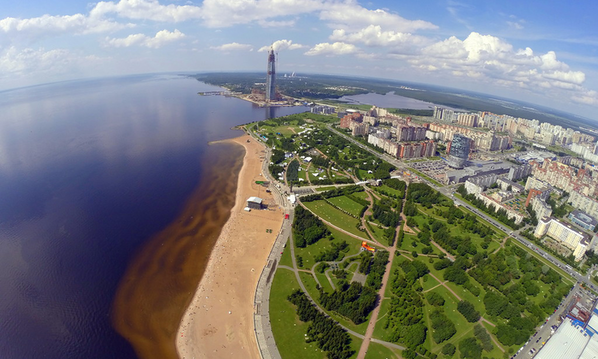
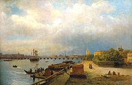
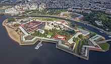
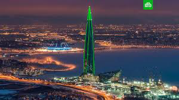
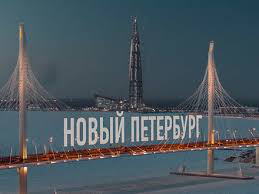

Новая высота Санкт-Петербурга
До недавнего времени, самой высокой точкой Санкт-Петербурга была Петропавловская крепость.
С постройкой «новой высоты Санкт-Петербурга» - Лахта- центра всё внимание горожан и туристов переместилось туда. К чемпионату мира по футболу 2018 недалеко от Лахта-центра построен новый стадион и эстакада Западного скоростного диаметра на Крестовском острове, проведено несколько новых мостов и обустроена прибрежная зона для занятия спортом и отдыха. Это место стало любимым местом туристов и горожан. Во время ЧМ по футболу тысячи болельщиков со всего мира посещали новую часть Петербурга, фотографировались на фоне новых достопримечательностей.
Лахта-центр находится в той точке, где Нева втекает в Финский залив, проведя свои воды от Ладожского озера и крепости «Орешек», через Петропавловскую крепость и Зимний дворец ( Центральная акватория Невы), через весь город.

Крепость была заложена 16 (27) мая 1703 года по совместному плану Петра I и французского инженера Ламбера: 6 бастионов, соединённых куртинами, 2 равелина, кронверк (первоначально дерево-земляные, в 1730-е-1740-е и 1780-е годы одеты камнем). В 1703 году Заячий остров был соединён с Петроградской стороной Иоанновским мостом.
В 1712 — 1732 годах построен Петропавловский собор (архитектор Доменико Трезини), усыпальница российских императоров от Петра I до Александра III[1].
В 1731 году на Нарышкином бастионе построили Флажную башню, на которой стали поднимать флаг (гюйс) (изначально флаг поднимался на Государевом бастионе). Флаг поднимался с утренней зарёй, опускался с вечерним закатом. С 1917 г. флаг не поднимался, но в 1990-е годы эту традицию возродили (сначала флаг поднимали и опускали, но впоследствии его стали постоянно держать на мачте).
С 1730-х годов появилась традиция отмечать полдень пушечным выстрелом с Нарышкина бастиона. Выстрел также отмечал начало и конец рабочего дня. Постоянно стали производить выстрел с 1873 года. В 1934 году выстрелы прекратили, но в 1957 году эту традицию возродили. В XIX веке на территории крепости с 11 до 12 часов дня играл оркестр.
В 1762 — 1766 годах в крепости был построен дом для ботика Петра I — «Дедушки русского флота» (бот был перевезён из Москвы в 1723 году, сначала для него был выстроен простой навес).
В 1779 — 1785 годах часть Петропавловской крепости облицевали гранитом. В 1784—1787 годах был придан торжественный вид Невским воротам и Комендантской пристани. Под аркой Невских ворот оформлена «Летопись катастрофических наводнений». В ней отмечены наивысшие подъёмы воды в 1752, 1777, 1788, 1824, 1924 и 1975 годах.
XIX—XX века
В 1798—1806 годах были построены здания Монетного двора (Монетный двор был переведён из Москвы в Санкт-Петербург в 1724 году и до постройки специального здания монеты чеканили в помещениях Трубецкого и Нарышкина бастионов). Справа от Петровских ворот в 1801—1802 годах был построен склад оружия (артиллерийский цейхгауз).

Петропавловская крепость никогда не принимала непосредственного участия в военных действиях. С самого начала своего существования она стала использоваться в качестве главной политической тюрьмы России.
В 1924 году крепость стала музеем. Хотя 8 ноября Ленинградский совет постановил разрушить Петропавловскую крепость, а на её месте построить стадион, это решение было вскоре отменено.
С 1925 по 1933 годы в Иоанновском равелине находилась Газодинамическая лаборатория, в которой сложился научный и практический костяк отечественной космонавтики и военной ракетной техники. В 1973 году на месте Газодинамической лаборатории открыт Музей космонавтики и ракетной техники (ныне — им. В. П. Глушко).

Вид на Петропавловскую крепость с борта вертолёта
Крепость входит в состав Музея истории Санкт-Петербурга. С Нарышкина бастиона Петропавловской крепости ежедневно в 12:00 производится выстрел сигнальной пушки.
В 1991 году на территории Петропавловской крепости установлен памятник Петру Великому работы скульптора Шемякина.
С начала XXI века на пляже Петропавловской крепости проводятся различные развлекательные мероприятия. Также проводятся экскурсии. По-прежнему действует Музей космонавтики и ракетной техники.
В 2005 году во флажной башне установили рояль, время от времени сюда для игры приглашают известных музыкантов.

Новый деловой центр в Санкт-Петербурге часто называют башней Газпрома. Это сооружение стало самым высоким в Северной столице и вторым по величине в Европе после Останкинской башни. Небоскреб возвёл Газпромом и в нем будут расположены штаб-квартира этого концерна и его компании.
Напомним, что первоначально строительство делового центра высотой 400 метров планировалось осуществить на участке 4,7 га, в центре Северной столицы, что вызвало резкий протест градозащитников и общественности. Объект попадал в охранную зону, где расположены памятники, входящие в перечень объектов ЮНЕСКО.
Вскоре губернатор Петербурга Валентина Матвиенко отменила постановление, позволяющее застройщику отклониться от разрешенной в этом месте высотности в 100 метров.
Новый участок в 14 га для сооружения Лахта башни расположен на севере Санкт-Петербурга на выезде из города между Финским заливом и Приморским шоссе. Расстояние от места строительства до центра города составляет около 10 км. По мнению экспертов, теперь Лахта башня, хотя и будет видна практически из всех районов города, но она не будет закрывать достопримечательности Санкт-Петербурга и доминировать над историческими объектами.
В то же время башня отлично видна с моря, она стала своеобразным маяком, встречающим приплывающих в город по морю. Это знаковый объект морского фасада Северной столицы.
В отличие от старого проекта, в Лахта центре, кроме офисной части, разместятся помещения социальной инфраструктуры.
Офисная часть займет помещения в самой башне, а здания у ее основания отведут под объекты социального назначения - магазины, спортивный и медицинский центры, детский образовательный центр и планетарий.
Наверху башни разместятся смотровая площадка, вращающийся ресторан и конференц-зал.

Высота здания со шпилем составит 462 метра, а общий вес башни со всей инфраструктурой, остеклением и даже с мебелью и людьми – 670 тысяч тонн.
Со стороны Финского залива башня Лахта центр предстанет во всем своем великолепии в виде устремленного ввысь шпиля. Также ее можно сравнить с каплей воды, летящей вверх.
Петр Первый задумал Петербург как морскую столицу России. И по замыслу авторов проекта, издалека, со стороны моря, Лахта центр будет похожим на белоснежную яхту.
Проект предусматривает несколько архитектурных изюминок, главные из которых – современный планетарий и открытый амфитеатр.
При закладке фундамента многие принципы были взяты у природы. Так, сваи в основании здания, словно корни гигантского дерева, уходят в землю на 82 метра. Выше свай построен «коробчатый» фундамент высотой 17 метров, что гарантирует устойчивость здания.
С юго-восточной стороны начнется пешеходная зона протяженностью 8 км. Она будет включать в себя мост и огромное пространство для проведения массовых гуляний и праздничных мероприятий.
Северная часть территории будет использована под различные выставки, а кроме того, в будущем здесь построят ж/д платформу и станцию метро.
Кроме того, рядом с башней будут находиться стоянка для туристических автобусов и музей корабля «Полтава».
В будущем между Лахта центром и станциями метро «Черная речка» и «Старая деревня» планируется наладить трансфер. В 2025 году предполагается построить станцию метро.
Башня Лахта центр станет центром нового делового района Санкт-Петербурга, можно сказать Петербургским сити, а развитие транспортной инфраструктуры превратит этот не обустроенный район Северной столицы в образец современной и качественной городской среды.
Источник